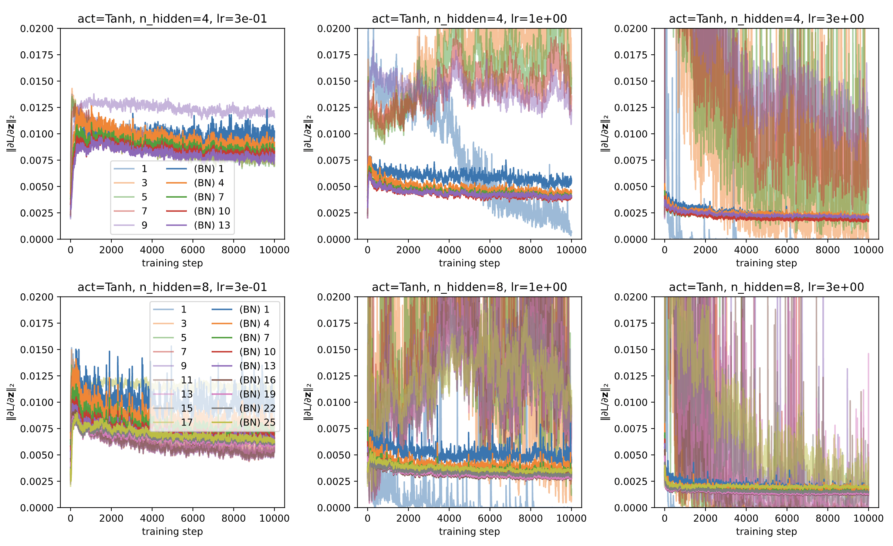

$ ok-transformer --help
Exploring machine learning engineering and operations. ❚



Fig. 1 Effect of batch normalization on the magnitude of preactivation gradients.#
#
Dependencies#
docker 5.0.3
docker-compose 1.25.5
fastapi 0.75.2
keras 2.8.0
matplotlib 3.5.1
mlflow 1.26.1
numpy 1.22.4
optuna 2.10.0
pandas 1.4.2
pipenv 2022.6.7
prefect 2.0b5
scikit-learn 1.0.2
seaborn 0.11.2
tensorflow-datasets 4.5.2
tensorflow-macos 2.8.0
tensorflow-metal 0.4.0
torch 2.0.0
torchaudio 2.0.1
torchmetrics 0.11.4
torchvision 0.15.1
uvicorn 0.17.6
xgboost 1.6.0.dev0
Hardware#
GPU 0: Tesla P100-PCIE-16GB
CPU: Intel(R) Xeon(R) CPU @ 2.00GHz
Core: 1
Threads per core: 2
L3 cache: 38.5 MiB
Memory: 15 Gb
References#
- ALL18
Sanjeev Arora, Zhiyuan Li, and Kaifeng Lyu. Theoretical analysis of auto rate-tuning by batch normalization. CoRR, 2018. URL: http://arxiv.org/abs/1812.03981, arXiv:1812.03981.
- AM16
Sanjeev Arora and Tengyu Ma. Back-propagation, an introduction. 12 2016. URL: http://www.offconvex.org/2016/12/20/backprop/.
- Bar91
A. R. Barron. Approximation and estimation bounds for artificial neural networks. In Proceedings of the Fourth Annual Workshop on Computational Learning Theory, COLT '91, 243–249. San Francisco, CA, USA, 1991. Morgan Kaufmann Publishers Inc.
- BDVJ03
Yoshua Bengio, Réjean Ducharme, Pascal Vincent, and Christian Janvin. A neural probabilistic language model. J. Mach. Learn. Res., 3:1137–1155, March 2003. URL: http://dl.acm.org/citation.cfm?id=944919.944966.
- BBBK11
J. S. Bergstra, R. Bardenet, Y. Bengio, and B. Kégl. Algorithms for Hyper-Parameter Optimization. Advances in Neural Information Processing Systems 24, 2011.
- Cho21
François Chollet. Deep Learning with Python, Second Edition. Manning, 2021. ISBN 9781617296864.
- CHM+15
Anna Choromanska, MIkael Henaff, Michael Mathieu, Gerard Ben Arous, and Yann LeCun. The Loss Surfaces of Multilayer Networks. In Guy Lebanon and S. V. N. Vishwanathan, editors, Proceedings of the Eighteenth International Conference on Artificial Intelligence and Statistics, volume 38 of Proceedings of Machine Learning Research, 192–204. San Diego, California, USA, 09–12 May 2015. PMLR. URL: https://proceedings.mlr.press/v38/choromanska15.html.
- CUH16
Djork-Arné Clevert, Thomas Unterthiner, and Sepp Hochreiter. Fast and accurate deep network learning by exponential linear units (elus). In Yoshua Bengio and Yann LeCun, editors, ICLR (Poster). 2016. URL: http://dblp.uni-trier.de/db/conf/iclr/iclr2016.html#ClevertUH15.
- DKB+20
Hadi Daneshmand, Jonas Kohler, Francis Bach, Thomas Hofmann, and Aurelien Lucchi. Batch normalization provably avoids rank collapse for randomly initialised deep networks. 2020. arXiv:2003.01652.
- DPG+14
Yann N. Dauphin, Razvan Pascanu, Caglar Gulcehre, Kyunghyun Cho, Surya Ganguli, and Yoshua Bengio. Identifying and attacking the saddle point problem in high-dimensional non-convex optimization. In Proceedings of the 27th International Conference on Neural Information Processing Systems - Volume 2, NIPS'14, 2933–2941. Cambridge, MA, USA, 2014. MIT Press.
- DCLT19
Jacob Devlin, Ming-Wei Chang, Kenton Lee, and Kristina Toutanova. Bert: pre-training of deep bidirectional transformers for language understanding. In Proceedings of the 2019 Conference of the North American Chapter of the Association for Computational Linguistics: Human Language Technologies, Volume 1 (Long and Short Papers), 4171–4186. 2019.
- Gan22
T. Ganegedara. TensorFlow in Action. Manning, 2022. ISBN 9781617298349. URL: https://books.google.com.ph/books?id=Hgh0zgEACAAJ.
- Geron19
Aurélien Géron. Hands-on machine learning with Scikit-Learn and TensorFlow : concepts, tools, and techniques to build intelligent systems, Second Edition. O'Reilly Media, Sebastopol, CA, 2019. ISBN 978-1491962299.
- GB10
Xavier Glorot and Yoshua Bengio. Understanding the difficulty of training deep feedforward neural networks. In Yee Whye Teh and Mike Titterington, editors, Proceedings of the Thirteenth International Conference on Artificial Intelligence and Statistics, volume 9 of Proceedings of Machine Learning Research, 249–256. Chia Laguna Resort, Sardinia, Italy, 13–15 May 2010. PMLR. URL: https://proceedings.mlr.press/v9/glorot10a.html.
- GDG+17
Priya Goyal, Piotr Dollár, Ross Girshick, Pieter Noordhuis, Lukasz Wesolowski, Aapo Kyrola, Andrew Tulloch, Yangqing Jia, and Kaiming He. Accurate, large minibatch sgd: training imagenet in 1 hour. 2017. URL: https://arxiv.org/abs/1706.02677, doi:10.48550/ARXIV.1706.02677.
- GZR21
Diego Granziol, Stefan Zohren, and Stephen Roberts. Learning rates as a function of batch size: a random matrix theory approach to neural network training. 2021. arXiv:2006.09092.
- HZRS15a
Kaiming He, Xiangyu Zhang, Shaoqing Ren, and Jian Sun. Deep residual learning for image recognition. CoRR, 2015. URL: http://arxiv.org/abs/1512.03385, arXiv:1512.03385.
- HZRS15b
Kaiming He, Xiangyu Zhang, Shaoqing Ren, and Jian Sun. Delving deep into rectifiers: surpassing human-level performance on imagenet classification. CoRR, 2015. URL: http://arxiv.org/abs/1502.01852, arXiv:1502.01852.
- HG16
Dan Hendrycks and Kevin Gimpel. Gaussian error linear units (gelus). arxiv, 2016. URL: http://arxiv.org/abs/1606.08415v3.
- HS97
Sepp Hochreiter and Jürgen Schmidhuber. Flat minima. Neural Computation, 9(1):1–42, 1997. doi:10.1162/neco.1997.9.1.1.
- HLP+17
Gao Huang, Yixuan Li, Geoff Pleiss, Zhuang Liu, John E. Hopcroft, and Kilian Q. Weinberger. Snapshot ensembles: train 1, get M for free. CoRR, 2017. URL: http://arxiv.org/abs/1704.00109, arXiv:1704.00109.
- HLW16
Gao Huang, Zhuang Liu, and Kilian Q. Weinberger. Densely connected convolutional networks. CoRR, 2016. URL: http://arxiv.org/abs/1608.06993, arXiv:1608.06993.
- IS15
Sergey Ioffe and Christian Szegedy. Batch normalization: accelerating deep network training by reducing internal covariate shift. CoRR, 2015. URL: http://arxiv.org/abs/1502.03167, arXiv:1502.03167.
- Kar22
Andrej Karpathy. The spelled-out intro to neural networks and backpropagation: building micrograd. 8 2022. URL: https://www.youtube.com/watch?v=VMj-3S1tku0.
- KMN+16a
Nitish Shirish Keskar, Dheevatsa Mudigere, Jorge Nocedal, Mikhail Smelyanskiy, and Ping Tak Peter Tang. On large-batch training for deep learning: generalization gap and sharp minima. CoRR, 2016. URL: http://arxiv.org/abs/1609.04836, arXiv:1609.04836.
- KMN+16b
Nitish Shirish Keskar, Dheevatsa Mudigere, Jorge Nocedal, Mikhail Smelyanskiy, and Ping Tak Peter Tang. On large-batch training for deep learning: generalization gap and sharp minima. CoRR, 2016. URL: http://arxiv.org/abs/1609.04836, arXiv:1609.04836.
- KB15
Diederik P. Kingma and Jimmy Ba. Adam: A method for stochastic optimization. In Yoshua Bengio and Yann LeCun, editors, 3rd International Conference on Learning Representations, ICLR 2015, San Diego, CA, USA, May 7-9, 2015, Conference Track Proceedings. 2015. URL: http://arxiv.org/abs/1412.6980.
- KUMH17
Günter Klambauer, Thomas Unterthiner, Andreas Mayr, and Sepp Hochreiter. Self-normalizing neural networks. CoRR, 2017. URL: http://arxiv.org/abs/1706.02515, arXiv:1706.02515.
- KSH12
Alex Krizhevsky, Ilya Sutskever, and Geoffrey E. Hinton. Imagenet classification with deep convolutional neural networks. In F. Pereira, C. J. C. Burges, L. Bottou, and K. Q. Weinberger, editors, Advances in Neural Information Processing Systems 25, pages 1097–1105. Curran Associates, Inc., 2012. URL: http://papers.nips.cc/paper/4824-imagenet-classification-with-deep-convolutional-neural-networks.pdf.
- LBBH98
Yann LeCun, Léon Bottou, Yoshua Bengio, and Patrick Haffner. Gradient-based learning applied to document recognition. In Proceedings of the IEEE, volume 86, 2278–2324. 1998. URL: http://citeseerx.ist.psu.edu/viewdoc/summary?doi=10.1.1.42.7665.
- LXTG17
Hao Li, Zheng Xu, Gavin Taylor, and Tom Goldstein. Visualizing the loss landscape of neural nets. CoRR, 2017. URL: http://arxiv.org/abs/1712.09913, arXiv:1712.09913.
- LH16
Ilya Loshchilov and Frank Hutter. SGDR: stochastic gradient descent with restarts. CoRR, 2016. URL: http://arxiv.org/abs/1608.03983, arXiv:1608.03983.
- LH17
Ilya Loshchilov and Frank Hutter. Fixing weight decay regularization in adam. CoRR, 2017. URL: http://arxiv.org/abs/1711.05101, arXiv:1711.05101.
- Maa13
Andrew L. Maas. Rectifier nonlinearities improve neural network acoustic models. In Proceedings of the 30th International Conference on Machine Learning, volume 28. 2013.
- ML18
Dominic Masters and Carlo Luschi. Revisiting small batch training for deep neural networks. CoRR, 2018. URL: http://arxiv.org/abs/1804.07612, arXiv:1804.07612.
- Min69
S. Minsky, M. Papert. Perceptron: an introduction to computational geometry. The MIT Press, 1969.
- Mis19
Diganta Misra. Mish: A self regularized non-monotonic neural activation function. CoRR, 2019. URL: http://arxiv.org/abs/1908.08681, arXiv:1908.08681.
- MKS+15
Volodymyr Mnih, Koray Kavukcuoglu, David Silver, Andrei A. Rusu, Joel Veness, Marc G. Bellemare, Alex Graves, Martin Riedmiller, Andreas K. Fidjeland, Georg Ostrovski, and others. Human-level control through deep reinforcement learning. Nature, 518(7540):529–533, 2015.
- NKB+19
Preetum Nakkiran, Gal Kaplun, Yamini Bansal, Tristan Yang, Boaz Barak, and Ilya Sutskever. Deep double descent: where bigger models and more data hurt. CoRR, 2019. URL: http://arxiv.org/abs/1912.02292, arXiv:1912.02292.
- RLMD22
S. Raschka, Y. Liu, V. Mirjalili, and D. Dzhulgakov. Machine Learning with PyTorch and Scikit-Learn: Develop Machine Learning and Deep Learning Models with Python. Expert insight. Packt Publishing, 2022. ISBN 9781801819312. URL: https://books.google.com.ph/books?id=UHbNzgEACAAJ.
- RM19
Sebastian Raschka and Vahid Mirjalili. Python Machine Learning, 3rd Ed. Packt Publishing, Birmingham, UK, 3rd edition, 2019. ISBN 978-1789955750.
- RSW+17
Alexander Ratner, Christopher De Sa, Sen Wu, Daniel Selsam, and Christopher Ré. Data programming: creating large training sets, quickly. 2017. arXiv:1605.07723.
- STIM19
Shibani Santurkar, Dimitris Tsipras, Andrew Ilyas, and Aleksander Madry. How does batch normalization help optimization? 2019. arXiv:1805.11604.
- SZ14
Karen Simonyan and Andrew Zisserman. Very deep convolutional networks for large-scale image recognition. CoRR, 2014. URL: http://arxiv.org/abs/1409.1556.
- ST17
Leslie N. Smith and Nicholay Topin. Super-convergence: very fast training of residual networks using large learning rates. CoRR, 2017. URL: http://arxiv.org/abs/1708.07120, arXiv:1708.07120.
- SDBR14
Jost Tobias Springenberg, Alexey Dosovitskiy, Thomas Brox, and Martin Riedmiller. Striving for simplicity: the all convolutional net. 2014. URL: https://arxiv.org/abs/1412.6806, doi:10.48550/ARXIV.1412.6806.
- SHK+14
Nitish Srivastava, Geoffrey E. Hinton, Alex Krizhevsky, Ilya Sutskever, and Ruslan Salakhutdinov. Dropout: a simple way to prevent neural networks from overfitting. Journal of Machine Learning Research, 15(1):1929–1958, 2014. URL: http://www.cs.toronto.edu/~rsalakhu/papers/srivastava14a.pdf.
- vdODZ+16
Aäron van den Oord, Sander Dieleman, Heiga Zen, Karen Simonyan, Oriol Vinyals, Alex Graves, Nal Kalchbrenner, Andrew W. Senior, and Koray Kavukcuoglu. Wavenet: A generative model for raw audio. CoRR, 2016. URL: http://arxiv.org/abs/1609.03499, arXiv:1609.03499.
- Vie16
Tim Vieira. Evaluating ∇f(x) is as fast as f(x). 9 2016. URL: https://timvieira.github.io/blog/post/2016/09/25/evaluating-fx-is-as-fast-as-fx/.
- Wai18
Elliot Waite. Pytorch autograd explained - in-depth tutorial. 11 2018. URL: https://www.youtube.com/watch?v=MswxJw-8PvE.
- WH18
Yuxin Wu and Kaiming He. Group normalization. 2018. URL: https://arxiv.org/abs/1803.08494, doi:10.48550/ARXIV.1803.08494.
- WJ21
Yuxin Wu and Justin Johnson. Rethinking "batch" in batchnorm. CoRR, 2021. URL: https://arxiv.org/abs/2105.07576, arXiv:2105.07576.
- ZLLS21
Aston Zhang, Zachary C. Lipton, Mu Li, and Alexander J. Smola. Dive into deep learning. arXiv preprint arXiv:2106.11342, 2021.
- ZFM+20
Pan Zhou, Jiashi Feng, Chao Ma, Caiming Xiong, Steven Hoi, and E. Weinan. Towards theoretically understanding why sgd generalizes better than adam in deep learning. In Proceedings of the 34th International Conference on Neural Information Processing Systems, NIPS'20. Red Hook, NY, USA, 2020. Curran Associates Inc.